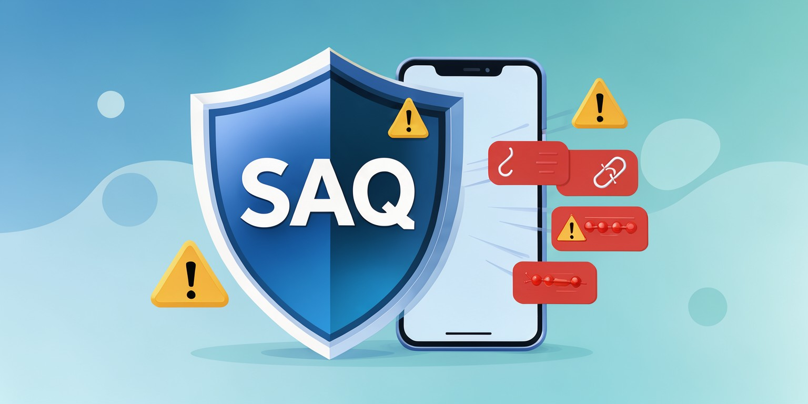

SAQ: Kazakh-Language Scam Message Detection
A tool that spots the warning signs in suspicious messages and explains why they look dangerous — in language that is easy to understand.

SAQ stays in front of the user: it warns about fraud instead of letting the message through.
Abstract
Online scams often use urgency, impersonation, suspicious links, or requests for sensitive information to pressure people into making unsafe decisions. These messages can be particularly challenging for people with less experience recognising digital fraud. SAQ explores a Kazakh-language tool that identifies potential warning signs in messages and explains why they may be suspicious. The project aims to make digital safety guidance more accessible, especially for older adults in Kazakhstan. Further development and evaluation are needed to assess the tool’s accuracy, limitations, and usefulness across different message types.
Finds the red flags
Urgency, fake prizes, strange links, requests for card numbers or SMS codes.
Explains in plain words
Not just “scam”, but why the message looks suspicious, in simple Kazakh.
Made for Kazakhstan
Built around the messages people here actually receive on WhatsApp and SMS.
Paper and resources
Code, demo and project materials are collected below.
# Project repository git clone https://github.com/dilya265/Saq.git # Open the project folder cd Saq